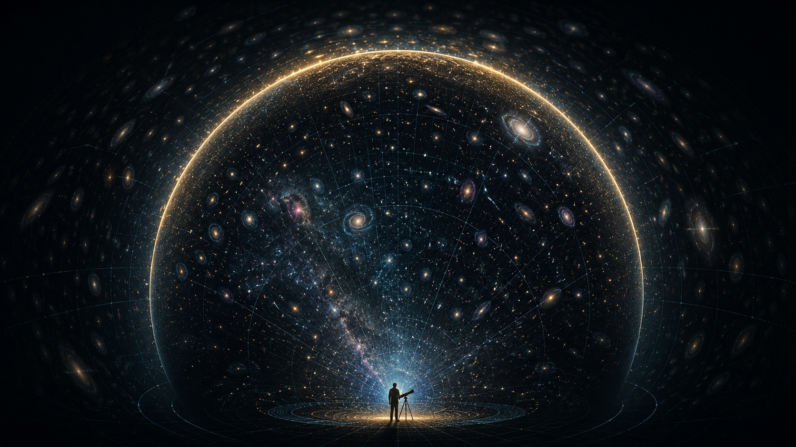
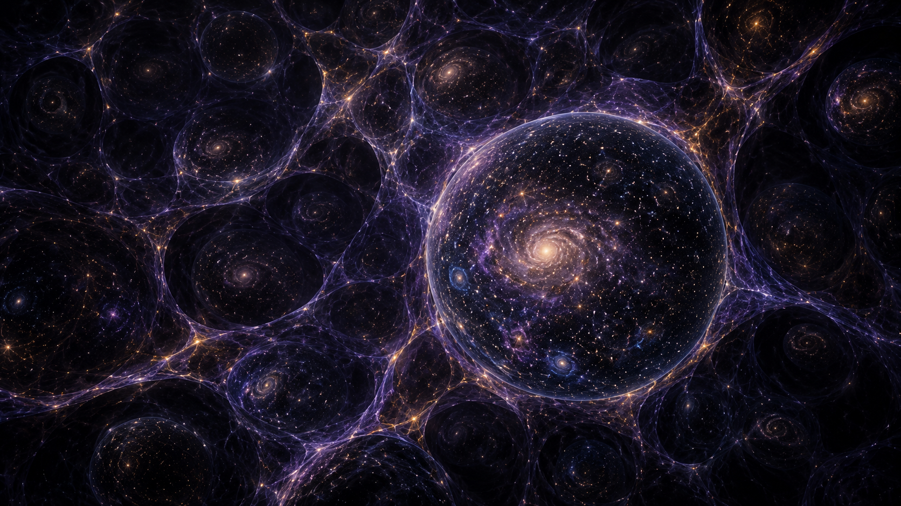

The Big Bang was not a bomb in a pre-existing room.
The common picture is an explosion: something detonates in the middle of darkness, matter flies outward, galaxies scatter through empty space, and eventually we appear with telescopes, anxiety, and Wi-Fi. It is a dramatic image. It is also not what the Big Bang model means.
The Big Bang model says that the early universe was hot, dense, and expanding. It does not describe matter exploding into pre-existing empty space. It describes space itself expanding. The galaxies are not flying away from a central blast point in the ordinary sense; rather, the distance between widely separated regions grows because the metric of space changes with time.
A better image is not an explosion inside a room. It is the room itself changing scale. Even that analogy is imperfect, because the universe is not obliged to be a polite balloon or a rubber sheet. But it does help remove the biggest misconception: the Big Bang was not an explosion located somewhere. It was a state of the universe everywhere we can observe, rewound to much hotter and denser conditions.
The scale factor a(t) describes how distances between comoving points change with cosmic time. If a(t) grows, the universe expands.
This is why the language can feel strange. We say “the universe began,” but in a technical sense we are often describing the earliest state our current physics can trace. The Big Bang is not a cartoon fireball. It is a boundary where our tested models become extremely compressed, extremely hot, and eventually incomplete.
Why do we believe the Big Bang model at all?
Cosmology is not just someone staring at the sky and deciding the universe had a dramatic childhood. The Big Bang model is supported by several independent lines of evidence, which is why it is taken seriously rather than filed under “interesting cosmic story.”
The first major clue is expansion. Distant galaxies show redshifts: their light is stretched to longer wavelengths. In the large-scale average, the farther away a galaxy is, the faster it appears to recede. This is not because Earth is special. It is because, in an expanding universe, every distant observer sees other distant galaxies moving away in a similar statistical sense.
The second clue is the cosmic microwave background, or CMB. This is the cooled remnant radiation from the early universe, released when the universe became transparent enough for photons to travel freely. It is almost uniform in every direction, with tiny fluctuations that later grew into the large-scale structure of galaxies and clusters.
The third clue is light-element abundance. The early hot universe produced hydrogen, helium, and small amounts of other light nuclei in proportions that broadly match what we observe. That matters because it connects a cosmological model to nuclear physics, not just to pretty galaxy pictures.
What happened before the Big Bang?
This question is irresistible. It is also dangerous. In everyday life, “before” is simple. There is yesterday, then today. There is cause, then effect. There is a kettle, then tea. Cosmology is less considerate.
In standard cosmology, time as we understand it is part of the universe’s evolution. If time itself is tied to the geometry and physical state of the universe, asking what came “before” the Big Bang may be like asking what is north of the North Pole. The grammar survives, but the physical meaning may not.
That does not mean the question is stupid. It means it needs sharper physics. The earliest moments of the universe require regimes where general relativity and quantum mechanics are both important. We do not yet have a complete tested theory of quantum gravity. So the honest answer is not “nothing came before” and not “definitely another universe.” The honest answer is: our current models reach a limit, and beyond that limit we need better physics.
There are possible ideas: bouncing cosmologies, cyclic models, quantum creation scenarios, inflationary histories, and multiverse-like pictures. These are intellectually exciting, but excitement is not evidence. The universe does not become true just because it gives us goosebumps.
Maybe the universe has no edge. Maybe our view does.
The observable universe is not the whole universe. It is the region from which light has had enough time to reach us since the early universe became transparent. Beyond that horizon, there may simply be more universe. Not a wall. Not a sign saying “end of map, please turn around.” Just regions whose light has not reached us, and may never reach us depending on cosmic expansion.
This is one of the most unsettling parts of cosmology. We can make precise measurements inside our observable patch, but the whole universe may be much larger than that patch. It could be finite but unbounded, infinite, or shaped in a way that is difficult to test from inside it.
When people ask whether the universe has an edge, they often imagine travelling far enough and reaching a boundary. But modern cosmology does not require an edge in that sense. A finite universe can be unbounded, and an infinite universe obviously has no edge. Either way, our observable limit is not necessarily a physical boundary; it is an observational boundary.
Were there many Big Bang-like events?
The idea is tempting: maybe our universe is one bubble, and maybe other bubbles exist beyond our horizon with different histories or even different physical conditions. It sounds like science fiction because, frankly, the universe has been rude enough to make some science-fiction-sounding ideas mathematically discussable.
Inflationary cosmology provides one route to such thinking. If inflation can continue in some regions while ending in others, one can imagine bubble-like universes forming within a larger inflating background. But this is exactly where the tone needs to become careful. A model can be mathematically interesting without being observationally confirmed.
For me, the multiverse question is less about declaring an answer and more about appreciating the scale of what we do not know. We already live inside a universe where the observable part contains hundreds of billions of galaxies. Asking whether even that is only a local patch is both thrilling and slightly offensive to human intuition.
The scale of the universe makes loneliness feel technical.
Cosmology naturally leads to another question: where is everyone? If the universe is so large, if stars and planets are so common, and if chemistry has had billions of years to experiment, why does the sky look so quiet?
This is where cosmic scale becomes emotionally strange. We look back billions of years, detect ancient light, map galaxies, measure background radiation, and still we do not know whether technological civilizations are rare, short-lived, quiet, hidden, or simply too far away in space and time for our current instruments to notice.
The Big Bang gives us a universe with a history. Astrobiology asks whether that history produced other minds. SETI asks whether any of those minds are transmitting. Human anxiety asks whether we are alone. The telescope, as usual, remains professionally neutral.
The images are not evidence. They are maps for imagination.
For this post, I am using visual frames because the Big Bang is difficult to hold in the mind as a purely textual idea. The visuals are conceptual: useful for thinking, not substitutes for data. A galaxy image is not a proof of the Big Bang. A cosmic timeline is not a photograph of the beginning. But good visuals can keep the physics from turning into abstract fog.



The next question is not smaller.
This post is Part I because the Big Bang deserves a careful beginning before we jump into the wilder territory. Part II can focus more directly on inflation, the multiverse, cosmic bubbles, what “outside the universe” may or may not mean, and whether the question “before the Big Bang” is a physical question or a human sentence that physics has not agreed to answer.
I do not want Part II to become fantasy wearing a lab coat. The goal will be to keep the curiosity alive while separating what is measured, what is modelled, and what is still speculative.
The beginning is still not fully finished.
The Big Bang model is one of the strongest frameworks in modern cosmology, but the earliest moments remain an active frontier. The honest answer to “what happened before?” is not a neat sentence. It is a research programme.
And maybe that is why it scares me in the right way. Not because it is meaningless, but because it is meaningful at a scale where human intuition starts to crack. We are temporary creatures trying to understand permanent-looking questions. That is terrifying. It is also the entire point.
Comments & reactions
Powered by GitHub Discussions via giscus. Leave a question, correction, or thought below.